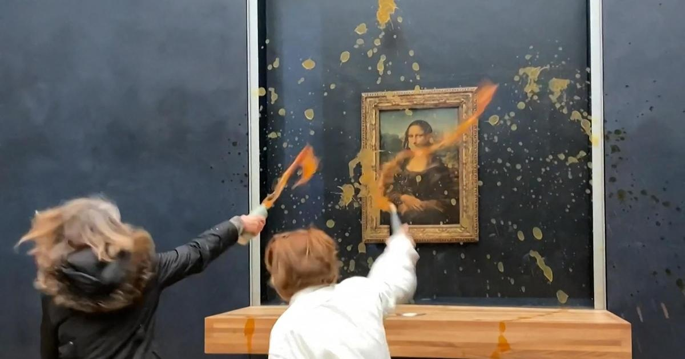

2 climate activists arrested after throwing soup at "Mona Lisa" in ParisTwo climate activists hurled soup Sunday at the glass protecting the "Mona Lisa" at the Louvre Museum in Paris and shouted slogans advocating for a sustainable food system. In a video posted on social media, two women with the words "FOOD RIPOSTE" written on their T-shirts could be seen passing under a security barrier to get closer to the painting and throwing soup at the glass protecting Leonardo da Vinci's masterpiece. "What's the most important thing?" they shouted. "Art, or right to a healthy and sustainable food?" "Our farming system is sick. Our farmers are dying at work," they said. The Louvre employees could then be seen putting black panels in front of the "Mona Lisa" and asking visitors to evacuate the room. Paris police said that two people were arrested following the incident. On its website, the Food Riposte group said the French government is breaking its climate commitments and called for the equivalent of the country's state-sponsored health care system to be put in place to give people better access to healthy food while providing farmers a decent income. Angry French farmers have been using their tractors for days to set up road blockades and slow traffic across France to seek better remuneration for their produce, less red tape and protection against cheap imports. They also dumped stinky agricultural waste at the gates of government offices. This is not the first time the "Mona Lisa" has been targeted by activists. In 2022, a man disguised as an elderly lady in a wheelchair . Once in front of the painting, he stood up and smeared the cake over the glass case that protects the Renaissance painting. The man threw roses as security guards pounced on him. "Think about the Earth. There are people who are destroying the Earth. Think about it," the man said in French as he was led away. "All artists, think about the Earth — this is why I did this. Think about the planet." Also in 2022, two climate activists at Claude Monet's "Les Meules" and then glued themselves underneath the painting at Museum Barberini in Potsdam, Germany. The painting was not damaged during the incident. At London's National Gallery, environmental protesters over Vincent van Gogh's "Sunflowers" painting in 2022. BBC News said the gallery had confirmed that the painting was covered by glass, so it wasn't damaged. A climate activist in October 2022 tried to to the iconic "Girl with a Pearl Earring" painting at the Mauritshuis museum in The Hague, the Netherlands. Last year, climate activists turned the water of Rome's iconic Trevi Fountain black in . Activist group Ultima Generazione said that eight people poured "vegetable charcoal" in the water as demonstrators pushed for an "immediate stop" to fossil fuel subsidies. for more features. |
 |